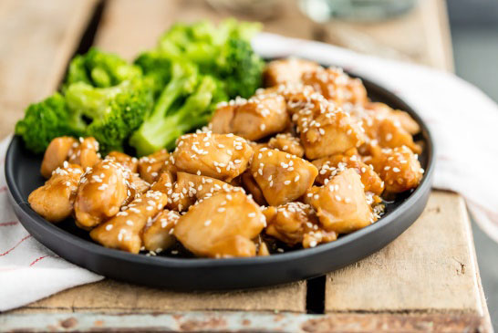

Teriyaki

La receta tradicional para preparar tamales
Existen pocos platillos en nuestro país capaces de ocupar un lugar tan privilegiado en la cultura y la vida cotidiana. Exigencia casi forzosa para cualquier estómago en ayunas y complemento de los triunfos y festejos más diversos, sin olvidar el dicho popular que señala que por cada mal hay un tamal, los tamales son un emblema de nuestra gastronomía desde antes que este país se llamara México. Los hallazgos arqueológicos ubican el surgimiento de este alimento entre el año 800 y 500 antes de nuestra era, y aunque no se tiene certeza de su origen exacto, lo más probable es que sucediera en el sitio donde también surgió el maíz: el actual territorio mexicano.
La palabra tamal proviene del náhuatl tamalli, que significa “envuelto”. En efecto, se trata de un platillo preparado a base de maíz molido o martajado, relleno de diferentes guisos e ingredientes, envuelto en hojas de maíz, plátano, aguacate o maguey y cocido al vapor. Aunque los tamales se extendieron desde la época prehispánica hasta lugares tan distantes como Perú y se cuentan entre los platillos típicos de varios países latinoamericanos, México es el único país donde existen alrededor de cinco mil formas distintas de prepararlos a lo largo y ancho de todo su territorio.
Ingredientes
- -1 kilo de masa para preparar tortillas
- -300 gramos de manteca de cerdo
- -1 taza de hielo picado
- -500 gramos de carne de cerdo cocida partida en trozos pequeños
- -½ litro de salsa picante verde
- -1 1/2 tazas de caldo (de la carne cocida)
- -Sal al gusto (se recomienda una cucharada sopera de sal por cada kilo de masa)
- -1 cdta de polvo para hornear
- -Hojas de maíz remojadas
Preparación
- En un recipiente se vierte la manteca con el hielo picado y se bate a mano por diez minutos, o hasta que se derritan los hielos y la manteca adquiera una consistencia cremosa.
- Hecho esto, en otro recipiente se amasa poco a poco con el caldo la masa para tortillas hasta conseguir una consistencia suave y manejable, ligeramente aguada. Es importante reservar una parte del caldo para usarse más adelante.
- En seguida se mezcla la manteca, se añade la sal y el polvo para hornear, al tiempo que se agrega lentamente el caldo restante y se bate para conseguir que la masa mantenga su consistencia cremosa. El secreto para saber cuando la masa está lista es que debe tomarse una pequeña porción y verterla en un recipiente con agua. Si flota significa que tiene aire suficiente para esponjarse en el momento de la cocción. Otro secreto para que la masa de los tamales quede firme y no se despedace una vez cocida es hacer todo el batido a mano. Es cansado, pero vale la pena.
- Se rellenan las hojas de maíz con la masa (un kilo alcanza aproximadamente para quince porciones de trece centímetros, pero pueden ser más pequeños para preparar más tamales).
- Se mezcla la salsa con la carne cocida y se añade con cuidado. Se envuelve cuidadosamente el tamal con una o dos hojas de maíz previamente remojadas, dependiendo del tamaño de la porción y se cuece al vapor por espacio de hora y media.